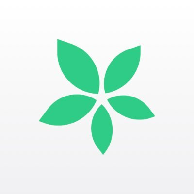

|
Outlook ir plašs Microsoft produktu klāsts, taču galvenā fokusēšanās ir uz e-pasta pakalpojumu, kalendāru, uzdevumu sarakstu un kontaktu pārvaldību. |
Kalendārs: Izmantojiet kalendāru, lai plānotu tikšanās un svarīgus pasākumus, un izmantotu atgādinājumus, lai neaizmirstu par tiem.
Uzdevumu saraksts: Organizējiet savus darba uzdevumus un noteikiet prioritātes un termiņus, izmantojot uzdevumu sarakstu.
Sinhronizācija: Sinhronizējiet savu kalendāru un uzdevumu sarakstu ar citām ierīcēm, lai vienmēr būtu pieejama jūsu plānošana. |
|
Google Dokumenti ir tiešsaistes dokumentu redaktors, kas piedāvā iespēju izveidot, rediģēt un kopīgot dokumentus tiešsaistē, neizmantojot papildu programmas vai instalācijas. Tas ir Google produktu klāsta sastāvdaļa un ir pieejams bez maksas visiem, kas ir Google konta īpašnieki. |
Kopīgs kalendārs: Izveidojiet Google Dokumentos kopīgu kalendāru, kurā varat atzīmēt svarīgus datums un notikumus. Katrs dalībnieks var rediģēt un pievienot notikumus, tādējādi visi vienmēr ir informēti par plāniem.
Uzdevumu saraksti: Izveidojiet uzdevumu sarakstu Google Dokumentos, kurā varat norādīt svarīgos darbus, to prioritātes un termiņus. Katrs darbinieks var rediģēt un atzīmēt uzdevumus, kad tie ir pabeigti.
Kopīgs darba plāns: Kopīgajā Google Dokumentā varat izveidot detalizētu darba plānu, kurā iekļauti darba uzdevumi, termiņi, atbildīgās personas un papildu informācija. Tas nodrošina skaidru priekšstatu par to, kas jādara un kad.
Atgādinājumi un notikumu paziņojumi: Izmantojot Google Dokumentus, varat iestatīt atgādinājumus par svarīgiem notikumiem un uzdevumiem. Tas palīdzēs jums neaizmirst par būtiskajiem darbiem un pasākumiem.
Izkārtojumu plānošana: Google Dokumenti piedāvā dažādus izkārtojumu veidus, piemēram, tabulas, diagrammas un grafikus, kas palīdz vizuāli plānot laiku un resursus. |
.png) |
Zapier ir tiešsaistes automatizācijas rīks, kas ļauj integrēt dažādas tiešsaistes lietojumprogrammas un pakalpojumus, lai automatizētu uzdevumus un procesus bez programmēšanas prasmes vai sarežģītas kodēšanas |
Izveidojiet savienojumu: Izmantojot Zapier, izveidojiet savienojumu starp jūsu e-pasta platformu (piemēram, Gmail) un uzdevumu saraksta pakalpojumu (piemēram, Todoist vai Trello).
Iestatiet izsaukumus: Izveidojiet izsaukumus (zvani) jūsu e-pasta platformā, kas tiek aktivizēti, kad saņemat noteiktu veidu e-pasta ziņojumu, piemēram, ar noteiktu tematu vai atslēgas vārdu.
Automatizējiet darbību: Konfigurējiet zap (automatizācijas darbību), lai, kad tiek saņemts e-pasta ziņojums, tas tiek automātiski atzīmēts kā uzdevums jūsu izvēlētajā uzdevumu sarakstā. Tas nodrošina, ka svarīgi uzdevumi netiek aizmirsti un tiek ātri pievienoti uzdevumu sarakstam. |
|  |
ChatGPT
TimeTree ir mobilā lietotne, kas ļauj lietotājiem viegli plānot un dalīties ar savu kalendāru ar ģimeni, draugiem vai kolēģiem. Šī lietotne nodrošina iespēju izveidot kopīgu kalendāru, kurā varat pievienot tikšanās, pasākumus, atgādinājumus un citus svarīgus datums, lai visi varētu redzēt un sekot notikumiem. |
Izveidojiet kopīgu kalendāru: Izveidojiet jaunu kalendāru TimeTree un dalieties ar to visiem ģimenes locekļiem. Katrs var rediģēt kalendāru, pievienojot notikumus vai atzīmējot savu pieejamību.
Plānojiet aktivitātes: Katrs ģimenes loceklis var pievienot notikumus kalendāram, piemēram, ekskursijas, izklaides vai kopēgas maltītes. Jūs varat norādīt datumus, laikus un vietas, lai visi būtu informēti par plāniem.
Atgādinājumi un dalīšanās: Iestatiet atgādinājumus par svarīgiem notikumiem, lai neaizmirstu par tiem. Turklāt varat arī dalīties ar notikumiem ar ārējiem draugiem vai ģimenes locekļiem, lai viņi varētu redzēt un piedalīties plānos.
Sinhrinācija un pieejamība: TimeTree ir pieejams gan iOS, gan Android platformās, un tas sinhronizējas ar jūsu kalendāriem uz šīm platformām, nodrošinot piekļuvi kalendāram jebkurā laikā un vietā. |